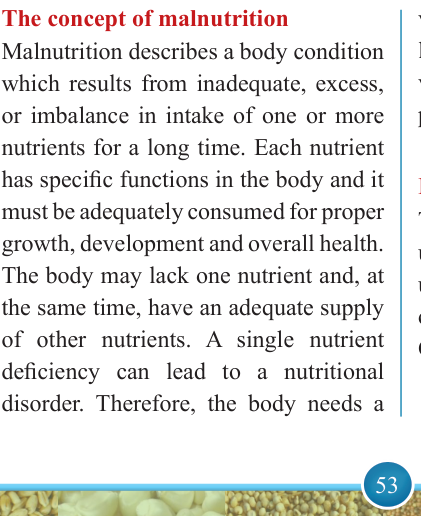
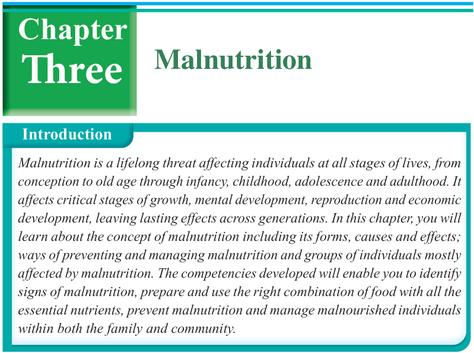

53


Food and Human Nutrition

Form Two
Think
Impact of malnutrition in the community

Malnutrition
Introduction
Malnutrition is a lifelong threat affecting individuals at all stages of lives, from
conception to old age through infancy, childhood, adolescence and adulthood. It
affects critical stages of growth, mental development, reproduction and economic
development, leaving lasting effects across generations. In this chapter, you will
learn about the concept of malnutrition including its forms, causes and effects;
ways of preventing and managing malnutrition and groups of individuals mostly
affected by malnutrition. The competencies developed will enable you to identify
signs of malnutrition, prepare and use the right combination of food with all the
essential nutrients, prevent malnutrition and manage malnourished individuals
within both the family and community.
Three
Chapter
The concept of malnutrition
Malnutrition describes a body condition which results from inadequate, excess, or imbalance in intake of one or more nutrients for a long time. Each nutrient has specific functions in the body and it must be adequately consumed for proper growth, development and overall health.
The body may lack one nutrient and, at the same time, have an adequate supply of other nutrients. A single nutrient deficiency can lead to a nutritional disorder. Therefore, the body needs a
variety of nutrients at recommended levels for proper performance of its various functions and prevention of possible nutritional disorders.
Forms of malnutrition
The forms of malnutrition include undernutrition
(wasting,
stunting,
underweight), micronutrient deficiencies,
overweight, obesity, and Diet-Related Non-
Communicable Diseases (DR-NCDS).
17/09/2025 16:30